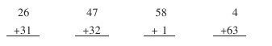

小学数学第二册“数与计算”教学建议 [1]
计算教学是小学数学各册教材的教学重点。如何切实打好计算教学的根基，关键是按照小学生的认知规律进行教学，充分调动学生学习的积极性和主动性，使学生理解数的概念和掌握运算法则。
九年义务教育五年制小学数学第二册“数与计算”是在20以内数的认识与计算的基础上学习的，是小学数学整数认识与计算教学的第二阶段。这一阶段教学的内容是：100以内数的读法与写法；100以内数的加法和减法；表内乘法（一）。通过教学，主要使学生理解100以内数的概念，比较熟练地计算100以内数的加法和减法，比较熟练地计算6以内的两个数相乘。这些知识都是进一步学习的基础，因此，必须切实学好。
一、100以内数的读法和写法
100以内数的读法和写法，具体的教学要求是：（1）使学生能够熟练地一个一个和一十一十地数出100以内的物体的个数；（2）认识计数单位“一”和“十”，知道10个“一”是“十”，知道“个位”、“十位”上的数表示的意义。能够正确地、比较熟练地读写100以内的数；（3）掌握100以内数的组成；能说出21～100各数是由几个十和几个一组成的；（4）掌握100以内数的顺序，会用符号“＞、＜、=”比较100以内数的大小；（5）能够熟练地口算整十数加一位数和相应的减法。
该单元的教学重点是100以内数的读法和写法，教学难点是100以内的数数和理解数位的意义。
下面分小节谈一谈教学建议。
1.数数数的组成
数数，尽管有些学生已经会数100以内的数，但要达到正确、熟练的程度还需要教师分步进行指导。
第一步，让每个学生准备100根小棒，先一根一根地数，数完10根捆成一捆，是一个十，然后一十一十地数（即一捆一捆地数），一个十是10，2个十是20，3个十是30……10个十是100。使学生知道“一”、“十”、“百”之间的十进关系，进一步体会以“十”作计数单位的优越性。要着重练习一十一十地数，使学生体会到十、二十、三十……的顺序与1、2、3……的顺序是一致的，为正确数出100以内的数打下基础。
第二步，数接近整十的数，着重使学生弄清几十九后面的一个数是多少。要注意用教具演示或通过学具操作，让学生加深印象。如数到29根，是2捆零9根，再添上1根，要把10根捆成一捆，一共是3捆，也就是2个十添上1个十是3个十，就是30。用同样的方法让学生从30数到40……从90数到100。学生每数到39、49、59、……99时，都让他们想一想，满十进一，该数是几十。
第三步，用计数器数数，进一步熟练地数100以内的数，初步认识100以内数的顺序和大小。如教师在计数器上拨出一个数24，让学生说说添上1是几，25比24多几，24比25少几。用同样的方法多拨几个数，使学生认识到后一个数总比前一个数多1，前一个数比后一个数少1，数数时，越往后面数数就越大。
第四步，离开实物和计数器抽象地数数。数数时可以分段练习，除了对接近整十的数重点练习外，教师随便说一个数，让学生从这一个数接着往下数到某数止，还可以变换形式提问学生：“59后面的一个数是什么数？”“70是在哪两个数中间？”
数的组成，可以在复习20以内数的组成、顺序的基础上进行教学，也可以结合数数进行教学。如让学生数出23根小棒，并提出怎样摆，让别人一眼看出是23根。学生摆出2捆零3根，从而说明2个十和3个一组成23；反过来，23是由2个十和3个一组成的。最后脱离实物，可由教师说一个数，学生直接说出这个数是由几个十和几个一组成的，或教师说几个十、几个一，学生说合起来是什么数。
2.读数写数
教学100以内数的读法和写法，初步建立数位的概念是关键。因此要借助直观教具的演示，由具体到抽象，逐步引导学生理解数位的意义，在此基础上使学生掌握读写法则。了解数位的意义包括知道数位的名称、数位的顺序，每个数位上的计数单位和相邻计数单位之间的十进制关系，使学生形成数字、数位、十进制构成自然数列的概念结构。
教学时，先复习数的组成，然后运用计数器和小棒，边引导设问边演示。如教师出示2捆小棒，让学生回答：“2捆小棒表示多少？为什么是2个十？组成的数是多少？”接着出示4捆3根，7捆，10捆。让学生在计数器上表示出来后再问：“十位上4颗珠表示多少？个位上3颗珠表示多少？合起来是几？”启发学生用数字表示这个数，学生回答后出示“43”。“7捆”让学生试着写出“70”这个数来。“10”捆可先让学生讨论该怎样写。教师问：“为什么‘1’要拔在第三位上？”以此引出第三位是“百位”这一新知识，并问“70和100中的‘0’能不能省略不写，为什么？”通过这三个例子的教学，最后引导学生总结出数位的顺序和读写数的顺序，使学生在理解的基础上牢记。
为了巩固读写方法，发展学生的思维能力，教师应根据学生在学习过程中出现的错误设计一些习题，有针对性地进行练习。如让学生口答：“55中左边的‘5’与右边的‘5’有何区别？36与63同样是由数字‘3’和数字‘6’合写成的，它们一样吗？为什么？”通过练习和比较使学生进一步明确一个数字写在十位上就表示几个十，写在个位就表示几个一，哪些数位上1个单位也没有，就要在哪个数位上用0补出。但读的时候末尾的0不读出来。3.数的顺序比较大小通过以上两小节内容的学习，学生对100以内数的顺序已基本掌握，这一节主要在复习的基础上进行系统整理，寻找规律，发展学生思维。如在学生掌握了100以内数的顺序的基础上概括出比较百以内两位数大小的方法。告诉学生100比任何两位数都大；两位数比任何一位数都大；两个两位数比较，十位上数字大的数较大；十位上数字相同，个位上数字大的数较大。这样既激发了学生学习数学的兴趣，又为以后学习比较数的大小奠定了基础。
4.整十数加一位数整十数减一位数
整十数加一位数和相应的减法是在数的组成的基础上进行教学的。通过教学，一方面巩固数的组成，另一方面为学习口算和笔算作准备。教学时，除了加强口算训练之外，还要注意运用旧知识学会新知识。如教学生计算30+4，启发学生想30和4可以组成34，所以30+4=34；教学生计算48-8，启发学生想48可以分成40和8，8-8=0，所以48-8=40。
二、100以内数的加法和减法
100以内数的加法和减法，教材中把口算和笔算各编为一个单元。“这样先集中学口算再学笔算，便于学生打好口算基础，形成口算的技能。学生比较熟练地掌握了口算再学笔算，也便于掌握笔算法则，在学习笔算的过程中进一步巩固口算，有利于培养学生的计算能力”。
1.口算
100以内数的加法、减法的口算，教材按难易程度分三段安排；第一段是整十数加、减整十数的口算；第二段是两位数加一位数、整十数（不进位）的口算，两位数减一位数、整十数（不退位）的口算；第三段是两位数加一位数（进位）的口算，两位数减一位数（退位）的口算。并提出不同要求：100以内整十数加、减整十数是熟练地口算；100以内两位数加、减一位数和整十数是比较熟练地口算。教学时应注意这样几点：（1）要充分发挥复习题的作用，以旧引新。该单元教材分五小节教学。每小节在例题之前都安排有复习题，其作用主要是通过复习，使学生回顾原有知识，减缓学生学习新知识的思维坡度，以旧引新，促进知识的迁移。同时，也为学生消化新知识提供合适的角度和方法，调节学生学习的心理，使学生感到学习新知识并不困难，因而增强学习的信心，爱学数学。如学习整十数加、减整十数，先复习“30里面有几个十？”学生知道30里面有3个十，按整十数相加就是2个十与1个十的和，这时学习例1，20+10=？学生就会想，因为2个十加1个十是3个十，所以20+10=30。计算30-10=？学生同样会想到：因为3个十减1个十是2个十，所以30-10=20。通过复习旧知识，学生学习新知识就会顺利些。又如学习两位数加一位数（进位），在学习例1前先复习20+（7+5），为学习新知做好铺垫。例1先从不进位引入，“27加2得多少？”这是旧知识，学生知道计算过程，当提出第二问“27加5呢”，学生就以旧知识为基础，自然相到应该先算7加5得12，再算12加20，另外再让学生进行实际操作，学生就很容易理解两位数加一位数（进位）的运算顺序及进位的道理。（2）要激发学生学习口算的兴趣，培养良好的口算习惯。口算是笔算的基础，笔算的正确与熟练，在一定程度上受到口算的制约。百以内的口算是在20以内加、减法的基础上进行的，计算方法基本相同，只不过数目较大，计算过程稍复杂一些。因此学生学习并不感到陌生，只要教师引导得法，及时进行教学反馈与评价，就很容易激发学生的学习兴趣。学生有了学习的动力，就会提高教学效率。（3）要加强口算的基本训练。口算的基本训练要经常进行。训练的内容不仅是较小的数字计算，也可以是文字题及反映基本数量关系的简单应用题，使学生认识到口算应用的广泛性，增强学习的信心；训练的形式可根据各阶段教学要求及学生的心理状态随时变换，如采用口算卡片练、编制口算表练、用幻灯片练，在游戏中练等。另外，对易错的内容要突出练，对重点内容要反复练。只有这样，才能达到到正确、迅速的计算要求。（4）要运用直观教具，帮助学生理解进位和退位的道理。口算时的进位或退位，不像笔算时可以凭借记进位数或退位点来帮助记忆，所以学生在口算进位加法和退位减法时，往往会遗忘十位加上进上来的1或忘记从十位减去1，或者反过来从减数里减去被减个位上的数。因此要针对这一难点，进行强化训练。不仅要通过教具演示或实际操作使学生明确算理，还要把进位的和不进位的、退位和不退位的口算加以比较，切实帮助学生牢固掌握。
2.笔算
笔算历来是小学数学教学的重点。由于笔算教学对培养学生的计算能力和初步的逻辑思维能力具有十分重要的意义。因此大纲指出：“笔算教学要引导学生理解算理，掌握法则，通过必要的练习逐步达到教学要求。”
百以内的两位数加、减两位数，是学生第一次接触加、减法的竖式。学习用竖式做笔算加、减法，关键是让学生理解笔算加、减法的三条基本法则，并会用法则进行计算。下面以两位数加两位数为例，谈一谈教学过程设计：
（1）口算，为新课作准备。可让几名同学分别讲一讲口算过程，明确只有相同数位上的数才能相加。
（2）通过观察、讨论，掌握运算法则第一、二条。
例1，34+5=？可以口算，也可以写成竖式，用笔算（竖式略）。提问：“为什么5写在4的下面？怎样对位？”
例2，把34+5改成34+25=，提问：“怎样列竖式？2写在哪个数的下面？为什么？在上面的竖式里，是从哪位加起的？”学生边回答，教师边总结：个位上的数与个位上的数对齐，十位上的数与十位上的数对齐，这就是“相同数位对齐”。计算的时候，先算4+5，这就是“从个位加起”。接着运用卡片练习，教师提问：

“最后一题先算什么？十位上写几？和是多少？”开始练习笔算时，应要求学生口述计算过程，把思维和语言表达有机结合起来。
（3）通过直观教学，帮助学生掌握进位法则。把34+25改写成34+28（例3），让学生尝试练习，可能有的答案是62，也可能有的答案是52，教师利用教具演示，演示时重点突出满十进一，然后教师及时小结（计算时除了要记住相同数位对齐，从个位加起外，还要看个位上两个数相加是否满十，如果满十，要向十位进1）。
（4）例4，主要解决个位上两个数加相后已经满十，个位上的数是0，该怎么办，0不写行吗，为什么？
（5）巩固练习。在以上的教学过程中，竖式的书写和计算方法是教学的重点，竖立式中的进位是教学的难点。两位数减两位数的笔算教学过程可参照两位数加两位数的笔算过程设计。在用竖式计算连加、连减和加减混合时，可以用两个竖式计算，为了简便可以写成一个竖式计算，但要讲解用一个竖式计算的方法。如果其中能口算的，就不必写出竖式。由于连加、连减和加减混合的情况复杂，进位、退位和不进位、不退位混杂在一起，学生计算时错误较多，教师要特别注意加强这方面的练习，只要求计算正确就可以了。
三、表内乘法（一）
表内乘法（一）有两小节内容：第一小节是乘法的初步认识。通过教学要使学生知道乘法的含义，认识运算符号“×”；知道加法和乘法的联系，会把求几个相同加数和的加法算式改写成乘法算式。第二小节是2～6的乘法口决。教学要求是：知道乘法口决是怎样来的，熟记2～6的乘法口决。难点是理解乘法的意义，关键是直观形象地理解相同数连加和乘法的关系，理解口决的意义。
在教学乘法的初步认识时注意以下几点：（1）要讲清什么叫“同数连加”，即每个加数都是相同的数，要把这些相同的加数连加起来。（2）要通过不同形式的练习，如填空、判断等，使学生记住乘法各部分的名称。（3）要加强加法算式与乘法算式相互改写的训练。（4）要引导学生认真观察图形，看图写出乘法算式或看乘法算式摆实物，理解乘法的意义。
教学2～6的乘法口决，一般应注意以下几点：（1）要充分发挥实物图的作用，讲清乘法口决的来源。（2）要从结构上弄清第一句口决的具体意义。如“四六二十四”就是4个6连加得24。（3）要进行用一句乘法口决写两道乘法算式的训练。（4）要找规律，有效地提高对乘法口决的记忆能力。